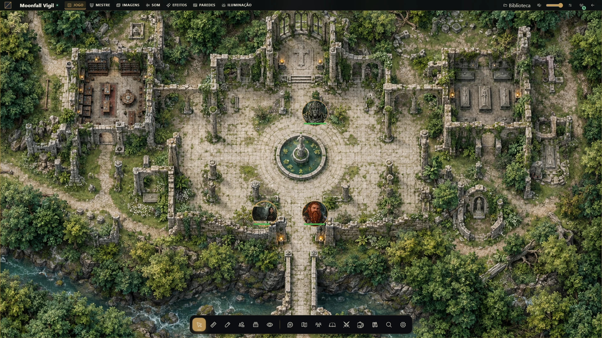
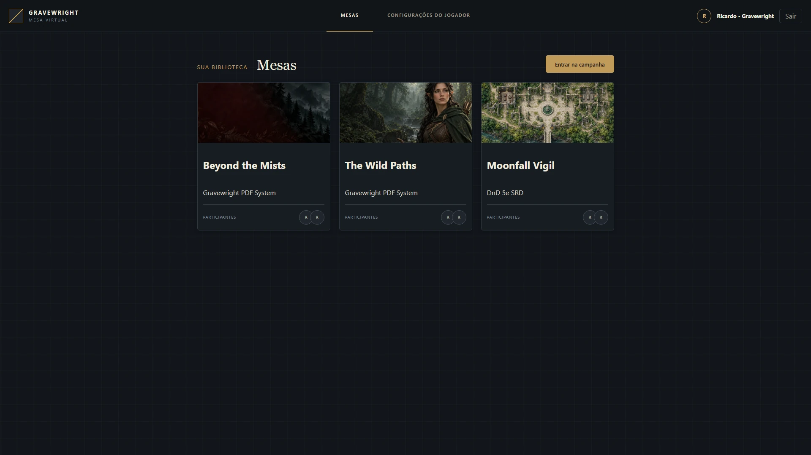
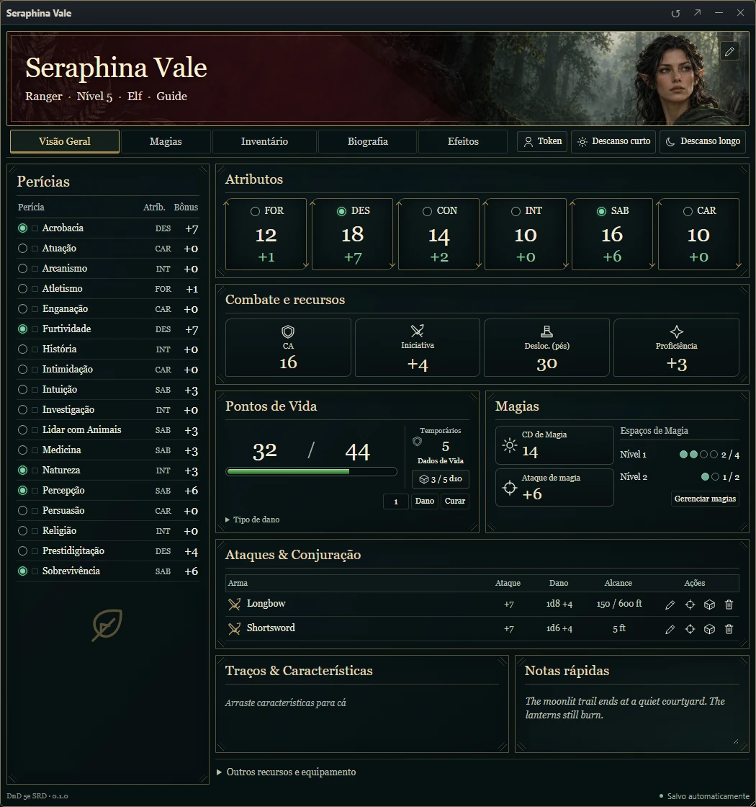
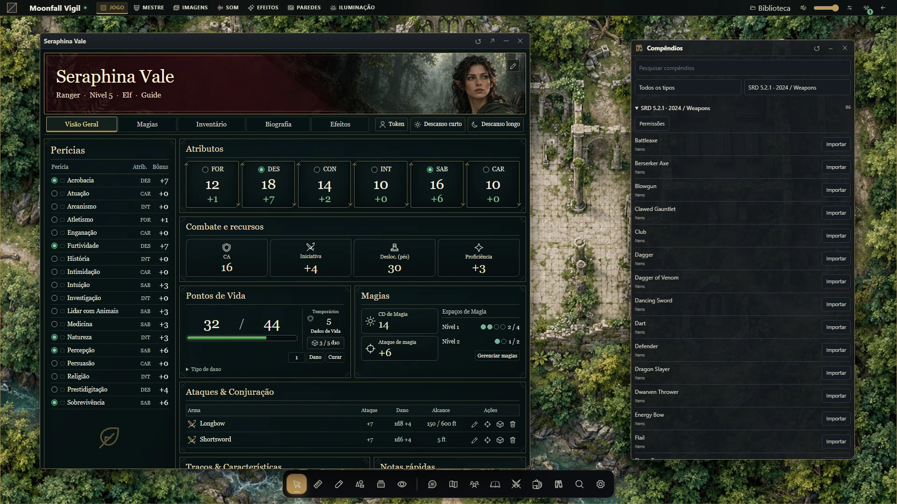

Revele o mundo no seu ritmo
Prepare cenas com paredes, iluminação e névoa e escolha o que o grupo pode ver.
VTT universal · Gratuito e open source · Alpha
Seu mundo. Seu grupo. Sua próxima grande sessão.
Disponível agora: 0.2.1 Alpha · Instalador Windows x64 incluído
Seu jogo, suas ferramentas · Sistemas independentes, módulos e fichas PDF
Uma mesa, muitas formas de jogar
Prepare os lugares que o grupo vai explorar, organize suas descobertas e crie a atmosfera da próxima cena. O Gravewright reúne as ferramentas compartilhadas de uma sessão de RPG; os sistemas instalados trazem suas próprias fichas e regras.
Prepare cenas com paredes, iluminação e névoa e escolha o que o grupo pode ver.
Abra as fichas do sistema, tenha os recursos por perto e envie as rolagens direto para o chat.
Mantenha diários, missões e materiais junto dos lugares e pessoas da campanha.
Role dados, toque áudio, compre cartas e acompanhe o combate sem trocar de aplicativo.
Gravewright em ação · Capturas reais do aplicativo
Explore Moonfall Abbey, mova tokens, meça distâncias, abra anotações da campanha e acompanhe o próximo turno. A gravação mostra o VTT real em uso, com um breve exemplo de ficha de um sistema opcional.
 Outro mundo para explorarAmplie a cena de batalha preservada de The Dragon’s Legacy.
Outro mundo para explorarAmplie a cena de batalha preservada de The Dragon’s Legacy.Prepare encontros, organize as anotações da campanha e revele a cena certa quando o grupo chegar.
Entre na mesa hospedada pelo mestre usando o navegador, abra sua ficha e jogue com o grupo.
Mantenha personagens, lugares e descobertas compartilhadas juntos entre as sessões.
Seus personagens à mão
Traga um PDF conhecido com o Gravewright PDF System ou escolha um sistema compatível com fichas próprias. Vincule os personagens aos tokens e tenha seus detalhes à mão durante a sessão.
A nova Alpha
O Gravewright 0.2.1 Alpha amplia as ferramentas da mesa: janelas nativas de itens, acesso mais rápido a compêndios e uma estrutura de combate para sistemas independentes. Prepare sua campanha e escolha as extensões que combinam com sua forma de jogar.
Versão disponível ↗
Tenha personagens, itens, diários e compêndios por perto. Pesquise o conteúdo da campanha e arraste documentos compatíveis para onde precisar.
Escolha PDFs mapeados ou fichas próprias de um sistema. Os sistemas instalados definem seus campos, cálculos e comportamento de salvamento.
Controle iniciativa e turnos ao lado da cena. Os sistemas instalados podem acrescentar recursos, efeitos e regras próprias de combate.
O Translator 0.1.2 oferece catálogos da interface em português e espanhol. Cada jogador mantém sua preferência de idioma.
Comece sua campanha
Baixe o Gravewright, execute o instalador Windows e crie sua primeira mesa no navegador. Use o Runner gerado sempre que estiver pronto para jogar.
Windows 10 (1803+) ou Windows 11 · x64 · Navegador com WebGL
Extraia o ZIP completo para uma pasta com permissão de escrita. Mantenha os arquivos juntos.
Abra Install Windows.bat e escolha suas configurações. O instalador baixa as ferramentas necessárias.
Abra Gravewright Runner.bat, crie sua conta de administrador e comece a preparar a campanha. Mantenha o Runner aberto enquanto joga.
Outras formas de hospedar
Prefere um servidor ou uma cópia do código? Use Python 3.14 ou superior e uv. Os comandos abaixo usam um shell POSIX e preservam sua configuração existente.
git clone https://github.com/Gravewright/gravewright.git
cd gravewright
uv sync --locked
cp -n .env.example .env
uv run --locked python manage.py migrate
uv run --locked python main.pyUma mesa universal, feita por você
O Gravewright oferece a mesa virtual. Sistemas independentes trazem fichas e regras de cada jogo; módulos acrescentam ferramentas como traduções e dados 3D. Use um sistema compatível ou PDFs mapeados para o jogo do grupo e crie suas extensões com a API documentada.
Escolha inglês, português brasileiro ou espanhol para sua interface. A API oficial de tradução também atende sistemas e módulos compatíveis.
Conheça o módulo ↗Veja as rolagens compatíveis em dados 3D e personalize suas cores, textos e aparência.
Conheça o módulo ↗Exemplo de sistema opcional · Disponível no Marketplace
DnD 5e SRD é um dos sistemas independentes que você pode instalar no Gravewright. Ele acrescenta fichas próprias, compêndios licenciados e automações compatíveis com as regras de 2014 e 2024.
Coleções parciais do SRD; o conteúdo dos compêndios está em inglês. Requer VTT 0.2.1+ e DnD 5e SRD Server Rules 0.1.0 para as automações de combate. Instale os dois pacotes do sistema pelo Marketplace.


O núcleo do Gravewright usa GPL-3.0-only com uma permissão para módulos independentes. Módulos escritos de forma independente podem usar qualquer licença, inclusive proprietária. Consulte os termos completos na política de licenciamento.
Leia a política de licenciamento ↗Antes de começar
O Gravewright é um VTT universal. Use uma extensão de sistema compatível para ter fichas e automações próprias ou mapeie fichas PDF para o jogo do grupo. O suporte às regras depende do sistema instalado.
Sim. O Gravewright é gratuito e open source. Você hospeda sua instalação e mantém o controle dos arquivos da campanha. Módulos de terceiros têm suas próprias licenças e condições.
Os jogadores acessam um servidor compartilhado pelo navegador. O Runner Windows inicia localmente; siga o guia de hospedagem para disponibilizar sua instalação ao grupo.
Instale o Translator pelo Marketplace e ative seus idiomas. Cada usuário pode escolher inglês, português brasileiro ou espanhol. Documentos e textos escritos pelo grupo mantêm o idioma original.
As campanhas ficam no seu host. A instalação Windows padrão guarda o banco de dados e a mídia enviada na pasta do aplicativo; você pode configurar outros locais. Encerre o Runner e faça backup do banco, da mídia, das configurações e das extensões instaladas antes de atualizar.
Sim. O Gravewright 0.2.1 Alpha já está disponível com o instalador Windows. Sistemas e módulos são instalados separadamente. Mantenha backups das campanhas importantes e leia as notas antes de atualizar.
Sim. Instale o sistema e o complemento Server Rules pelo Marketplace no VTT 0.2.1 ou mais recente. Escolha as regras de 2014 ou 2024. O pacote inclui fichas próprias e coleções parciais licenciadas do SRD; não inclui todos os livros de D&D nem artes oficiais.
Sim. O Gravewright aceita sistemas e módulos personalizados com APIs documentadas. Instale extensões de criadores em quem confia; módulos de navegador executam dentro da página da mesa.
Feito com a comunidade
Conte como o Gravewright funciona na sua mesa. Compartilhe uma ideia, relate um problema ou ajude com traduções, acessibilidade e documentação. Desenvolvedores também podem contribuir com o núcleo ou criar seus próprios módulos.
Abra espaço para sua próxima aventura